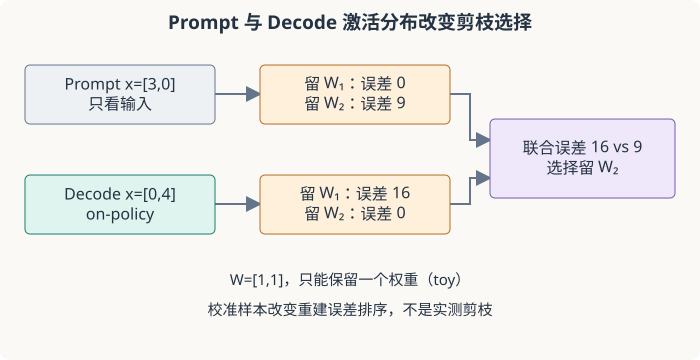
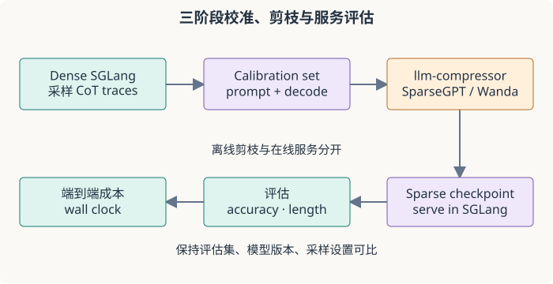

第 40 章 · SGLang 长上下文系统
Reasoning-Aware Compression：On-policy CoT 校准与模型剪枝
为什么剪枝后的模型可能更慢？怎样用实际生成轨迹校准激活？
为什么剪枝后的模型可能更慢？怎样用实际生成轨迹校准激活？ 本章从具体反例出发，再追踪运行时数据结构与正确性条件。
1. 参数变少，为什么端到端反而变慢
LLM pruning 目标是移除权重并尽量保留函数。普通 calibration 常来自输入 prompt；reasoning model 却大量执行自身生成的 CoT。剪枝扰动 decode 分布可能使模型反复推理、输出更长同时准确率下降。减少参数数量不直接等价于减少真实 GPU kernel latency。RAC 是 ICLR 2026 的模型剪枝校准方法，不是推理时删除 CoT。
2. 重建目标：从 weight 到 activation
令某线性层 W∈R^{d_out×d_in}，输入 activations X∈R^{d_in×n}，剪枝 W' 保持 shape 但非零元素数受限。最小化输出重建平方误差；不同列代表不同 token 经过这一层的输入。SparseGPT、Wanda 是不同剪枝方法，不把二者描述为完全相同求解器。
3. Prompt-only 的分布偏移
教学线性层 W=[1,1]，只能保留一个权重且不重拟合。prompt 样本 x=[3,0]，decode 样本 x=[0,4]。若删第二权重，prompt 误差0、decode 误差16；删第一权重，prompt 误差9、decode 误差0。prompt-only 会优先留第一个，而联合校准在这一 toy 上优先留第二个。该例仅说明样本分布改变误差排序，不复现 SparseGPT。

4. RAC：同一 solver，不同校准数据
X_RAC=[X_prompt, X_decode] 沿 token 列拼接；decode traces 由原始 dense 模型对任务 prompt 自回归采样，而不是人工答案、teacher forcing 标注或从剪枝后模型采样。真实论文还讨论不同层的 activation reconstruction；本文不把 token 数简单当作所有层误差权重。
5. SGLang 的三阶段实现
Phase I: rac_collect_traces.py 用 sgl.Engine rollout，写入 calibration traces。Phase II: rac_prune.py 读取 token sequences、构建 dataloader，调用独立 llm-compressor 的 SparseGPT 或 Wanda；它不是 SGLang 内置 solver。Phase III: rac_serve_and_eval.py 载入剪枝 checkpoint 并评估。固定 model revision、token budget、sampling settings 和 calibration/eval 划分。

6. 端到端延迟：每 token 快不代表请求快
教学示例 dense 输出 1000 tokens、每 token 2 ms、prefill 100 ms，合计 2100 ms；pruned 输出 3000、每 token 1 ms、prefill 100 ms，合计 3100 ms。真实连续 batching、稀疏格式与硬件支持更复杂；同时报告 accuracy、completion length、wall clock、TTFT 和有效 tokens/s，不使用这个例子声称实测加速。
7. 反例、实验与适用边界
若 calibration traces 与目标任务分布偏离，或生成轨迹过少，RAC 仍可能失败。非结构化稀疏性未必被 serving kernel 加速；稀疏格式、量化和 kernel 兼容性需实测。与第35章 RL rollout 不同，RAC 使用 dense policy 的 traces 做离线重建校准，而不是优化 reward 或更新 behavior policy。本文不复现论文 benchmark 数值。
8. 交互：机制状态与反例
Reasoning Compression 教学实验
Prompt-only：删 W₂ 的 prompt error 为 0，删 W₁ 为 9；因此选保留 W₁。
Prompt + CoT：删 W₂ 的联合误差 16，删 W₁ 为 9；toy 选择变成保留 W₂。
端到端评估：即使单 token 耗时减半，若输出变成三倍长，示例总时间反而从 2100 增至 3100 ms。
教学模型仅验证机制与反例，不代表真实 GPU benchmark。
9. CPU 最小实验
使用 Python 标准库验证上文核心不变量，下载 rac_calibration.py。源文件包含正例、异常或边界断言。
python3 examples/rac_calibration.py实验不运行真实 SGLang GPU serving、collectives、网络传输或模型训练。
10. 源码阅读路线与证据
固定上游快照 b1ef3a60797aa6c29bcfa4cc3bc135dd2f19ec22。论文贡献、运行时实现和教学推导分开标注。
- ICLR 2026 abstract：RAC jointly reconstructs activations from input and on-policy chain-of-thought traces during pruning.
- The problem / The fix：The reconstruction objective uses prompt and model-generated decode activations; conventional pruning can increase reasoning length.
- rollout / collect_traces：Phase I collects model-generated calibration traces with SGLang.
- load_calibration_sequences / build_recipe：Phase II builds calibration input and delegates pruning to llm-compressor.
- evaluate / report：Phase III serves checkpoints and reports accuracy, completion length and elapsed time.